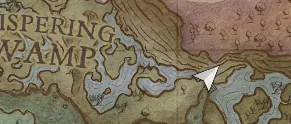

Goblin Diplomacy is a secondary quest that can be started by talking to Zanik on the ridge in Bramblemead Valley overlooking the Whispering Swamp, or by finding one of the two Bandosian amulets.
Overview
- A logging axe and 20 Woodcutting (if searching the guild reliquary)
- One steak (if bribing a caged goblin for the reliquary location)
- Good armour and weapons (ranged or magic when fighting the garou druid)
- Anti-poison potions
- Air runes to cast Windstep
- Food and water
- 32 stone, 20 rune essence, and 1 vault core to build a lodestone to Zanik
- Multiple Goblins
- Garou druid
Walkthrough
Starting off
Zanik will tell the player they sense the presence of a prophecy in the Outlook Ruins to the north-east of her, as well as in the Adventurer's Guild to the south. Both areas are overrun with goblins, so make sure you're properly equipped to take on the challenge with health potions, food, and water.
It is recommended that you place a lodestone at Zanik's location, as you'll have to come back to Zanik to complete the quest. This way, you can easily fast travel back to the location.
Bandosian Amulets
You can choose to either search the nearby ruins first or the Adventurer's Guild first. Both contain a reliquary containing the Bandosian amulet, but only one can be looted. The amulet in the location you didn't check first ends up stolen by a garou druid.
The ruins' reliquary is tucked away in a corner, whereas the guild reliquary is blocked by thorny vines, requiring 20 Woodcutting to cut down. The guild is also more dangerous due to the number of goblins inhabiting it, so it's recommended to obtain the amulet from the ruins' reliquary. Both locations have a caged goblin outside. Bilegut can be found outside the Outlook Ruins, and Wormelbow can be found outside the Adventurer's Guild. When talking to either of them before obtaining a Bandosian amulet, they'll offer to tell you the exact location of the respective reliquary in exchange for a steak. This is optional, as the reliquaries can be found without their help.
Next, you'll need to head to whichever location you did not obtain the Bandosian amulet from. If you obtained the amulet from the ruins, then head to the guild, and if you obtained the amulet from the guild, then head to the ruins. You don't need to defeat all the goblins there—simply locate the caged goblin and eliminate the goblins around it. Once the area is clear, speak with the caged goblin to learn the whereabouts of the second Bandosian amulet. The goblin will reveal that a garou-beastman has taken the second amulet to a cave in the Whispering Swamp.

Now, you must head to the cave in the swamp where a garou druid is keeping the second Bandosian amulet. However, the journey is not quite straightforward. The cave is located at the very bottom of the swamp, so be sure you go down into the swamp safely first, and then search for the cave. Otherwise, you will be running above the cave location and won’t be able to find the entrance. Once you've located the cave entrance, enter to find the garou druid. Defeat the garou druid to obtain the second Bandosian amulet. The garou druid is quite strong and can inflict a potent poison. To defeat it more easily, use magic attacks at a distance, and be sure to dodge its poison thorns.
Returning to Zanik
After obtaining both Bandosian amulets, return to Zanik. She will thank you for bringing the two amulets, and this will complete the quest. As a reward, Zanik will give you the goblin war banner.
Rewards
Trivia
- The quest is named after the 15th quest released in RuneScape.
This guide is the wiki's Goblin Diplomacy article, by its editors, reformatted for this site. Licensed CC BY-NC-SA 3.0.